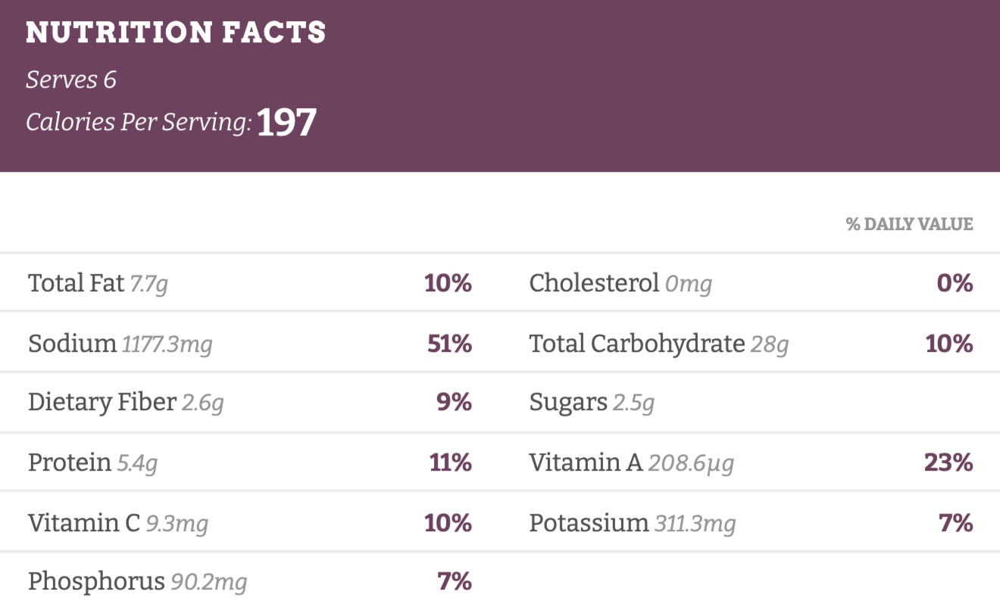

Homemade Ramen
Time: 25 minutes
Servings: 6 people
Description
Fresh vegetables? Quick and easy homemade broth? A soft-boiled egg and a pile of our favorite curly-cue packaged ramen noodles that remind us of college? That’s this homemade ramen. At the end of the day, a deep bowl of bright veggies + flavorful broth + golden panko crumbs + soft-boiled egg + chewy, tangled noodles is not going to let you down!
Ingredients
- 1 tablespoon sesame oil
- 3 teaspoon grated ginger
- 4 teaspoons grated garlic
- 4 cups chicken broth
- 4 cups water
- 1 ounce dried shiitake mushrooms
- 2 packets instant ramen
- 1/2 cup chopped kale
- 1 cup shredded carrots
- Sriracha to taste
- Crunchy golden panko crumbs
Steps
- Heat the sesame oil in a large skillet over medium low heat. Add the garlic and ginger; stir fry for 2 minutes or until soft and fragrant.
- Add the broth and the water. Bring to a simmer; add the mushrooms and simmer for 10 minutes or until the mushrooms have softened and the broth is flavorful.
-
Add the instant noodles to the hot liquid and simmer for an additional 5 minutes or until the noodles have softened. Add the scallions and stir to combine.
-
Remove from heat, stir in the kale and carrots, and top with crunchy panko crumbs (see notes) and a soft-boiled egg (optional). Season with chili oil, hot sauce, sesame oil, and/or soy sauce and salt to taste.
Nutrition Facts

Back to home